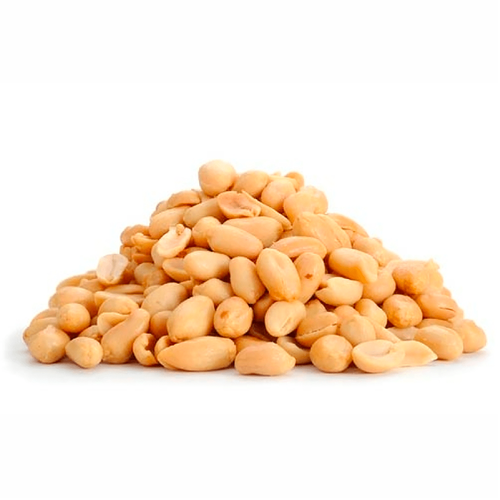
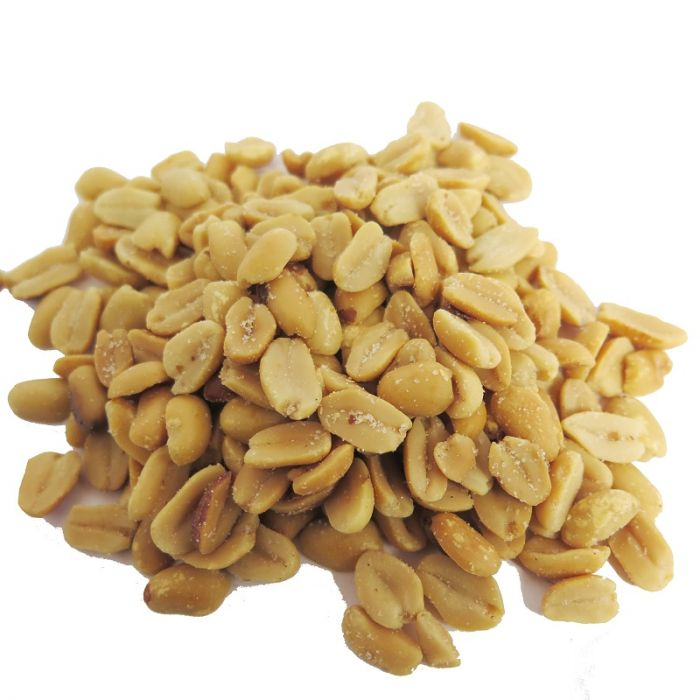
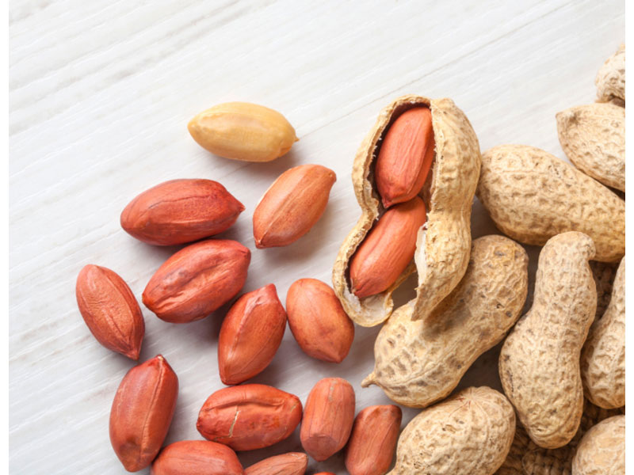

Mani
Arachis hypogaea, comúnmente conocida como cacahuate, caguate, cacahuete o maní, es una planta de la familia Fabaceae. Se cultiva por sus semillas comestibles. Es nutritivo, fluidificante, anticolesterolémico. La harina se usa para productos destinados a diabéticos (galletas, turrones). Se usan los frutos. Se recolectan en septiembre. Algunas personas deben evitarlo, pues es alergénico y también contiene fibras. Tiene niveles elevados de aflatoxina, una micotoxina de algunos hongos que puede ser peligrosa para la salud. Igualmente podría existir la posibilidad de que (al ser una legumbre que se come cruda) sus lectinas provocaran ateroesclerosis. Sin embargo, también se sugiere que puede mejorar el perfil lipídico. Al no haber clara evidencia hacia ninguna dirección, se recomienda no abusar de su consumo. A su vez, a pesar de ser altos en calorías, y según concluyen múltiples estudios, tanto los cacahuetes como los frutos secos son apropiados para la pérdida de grasa corporal y conseguir o mantener una composición corporal saludable, evitando así la obesidad. También podría ayudar a fortalecer el cerebro y la memoria regenerando las neuronas, disminuyendo así el riesgo de desarrollar la enfermedad de Alzheimer (al igual que todos los frutos secos).
Nuestras variedades de Mani
Mani repelado sin sal
Mani repelado con sal
Mani con cascara
PRECIOS
| Mani repelado sin sal | Mani repelado con sal | Mani con cascara | $214 | $214 | $267 |
|---|